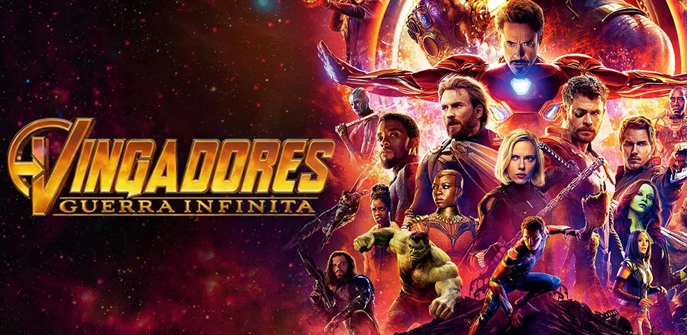

Vingadores: Guerra Infinita. A abertura começa com Thanos (Josh Brolin) massacrando os sobreviventes de Asgard. Quando tudo parece estar perdido para Thor (Chris Hemsworth) e Loki (Tom Hiddleston), Hulk (Mark Ruffalo) surge dos escombros e parte para cima do vilão. O problema? Ele perde e quase morre no processo.
A pergunta que atormenta os fãs é: como isso aconteceu? Os diretores Joe e Anthony Russo revelaram, em entrevista ao Collider, o fator determinante para que o Titã Louco derrotasse o enorme monstro verde:
"Eu diria apenas que ele é poderoso. Você não o vê usando a Joia do Poder no combate. Eu penso pelo jeito como vimos a luta e também como falamos com a equipe de dublês, em que Hulk é obviamente mais poderoso, mas não pensa muito quando luta. É agressivo, sai esmurrando. Já Thanos é o Ghengis Kahn do universo, um lutador muito bem treinado, igualmente forte. Então quando você coloca esses dois lutando, o mais habilidoso vai vencer".